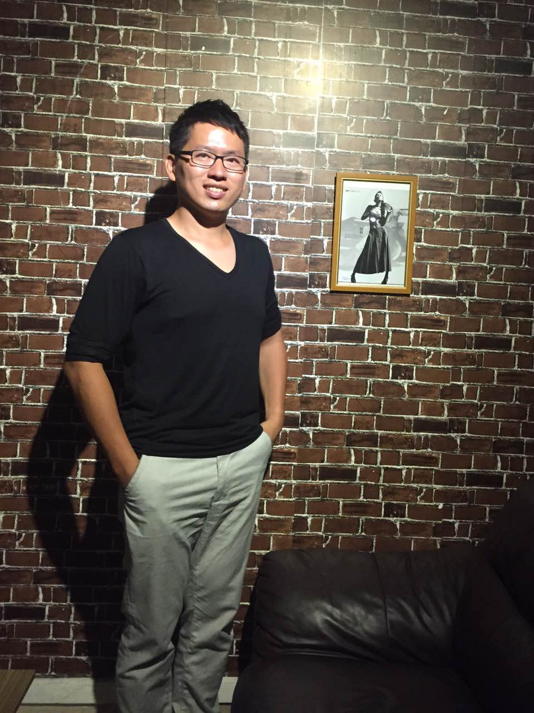

Gavin Lee
Hi, I am Gavin, not only a software engineer but also a maker. My 7+ years experience focus on audio system and drone design.
Experience:
Drone design, focus on flight control software.
Audio system software design including audio driver and aucustics parameter turning.
Data analyst platform generating.
Embedded system software design including smart phone, GPS chip firmware, display driver, IoT (Internet of Things) software, kernel debugging, and MCU peferial interface (I2C, I2S, ADC, PWM, UART, Ethernet)
OS: RTOS (eCos), Windows driver, Linux driver
Hardware: MCU/ARM, Intel GPU/X86, Audio DSP/MIPS,
Programming language: C language for firmware, object-oriented C for windows driver, Python for data analyst, and shell/Lua for IoT software.
Software project leading and managment.
Current Project:
The new drone project based on STM32 MCU is under planing
Wifi consumer speaker product
Finish Project:
Big data analyst platform including data collection, data analyst, and data reporting.
Linux vrtualization middleware based on QEMU/KVM, support virtual machine migration and USB I/O pass-through
Intel Haswell GPU driver of on Windows
MediaTek GPS IC (MT3333/MT3332) firmware on Android/RTOS
OEM Firmware for Nokia/Motoralla cellphone on Android/RTOS
Publication and Patents:
Patent: System and Method for Collecting Communication Signals, Kuan-Chun Lee (it's me)
1.
CN Patent No. 101621739, Jan. 06, 2010
2.
US Patent No. 0325600, Dec. 31, 2009.
Paper Submission: A Novel Capacity Analysis for Wireless Backhaul Mesh Networks, Tein-Yaw David Chung, Kuan-Chun Lee (it's me), and Hsiao-Chih George Lee
1.
IEICE Trans. Commutation. , vol.E91-B, no.10, pp. - , Oct. 2008. [SCIE]
2.
IEEE WCNC 2008, pp. 2343 - 2348, USA, Las Vegas
Read my
blog
and
travel notes
Fork me on
GitHub
Send me email at
maker.gavin@gmail.com
.

Fork me on GitHub